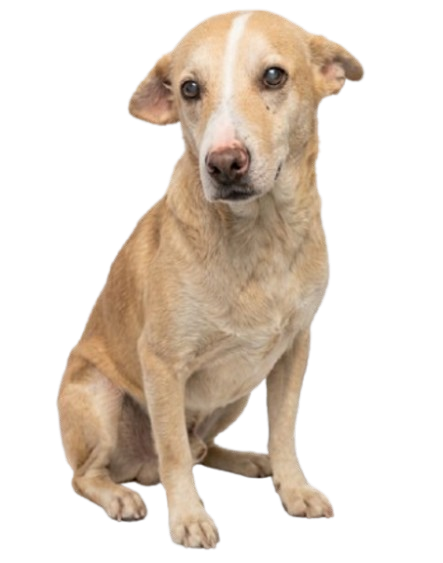
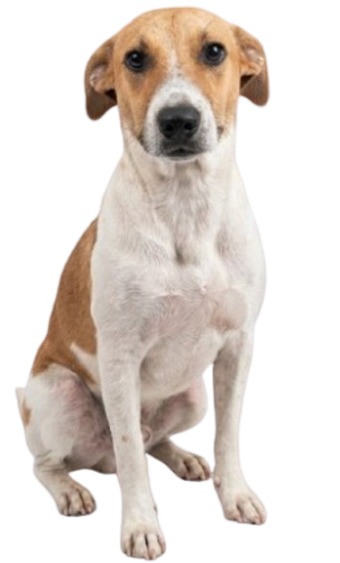
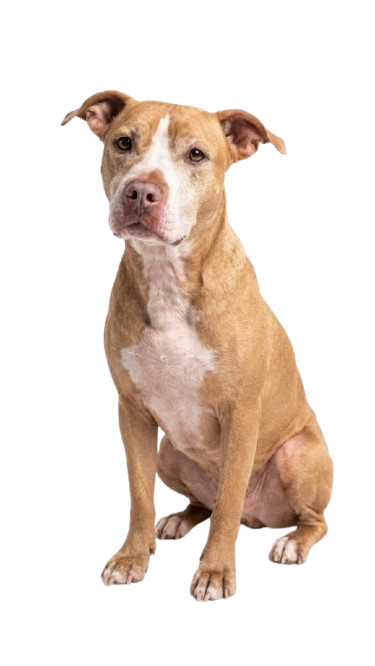
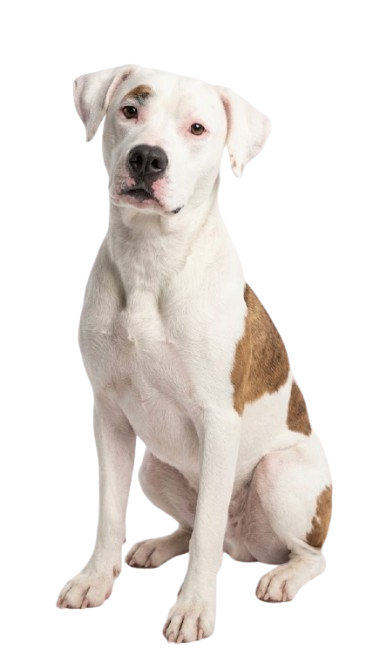
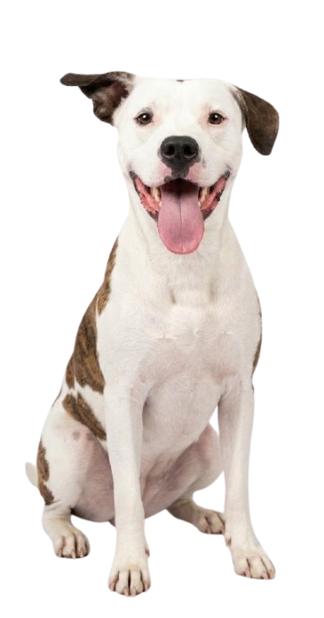
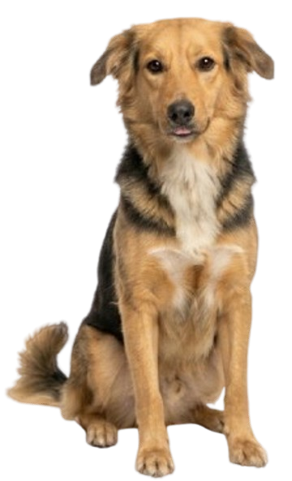
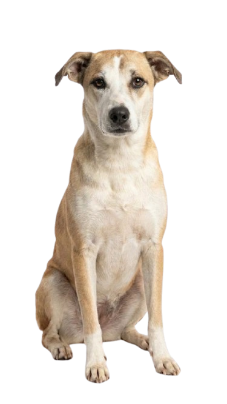
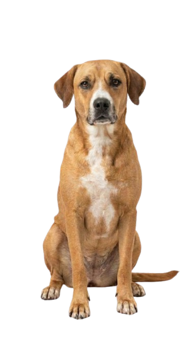
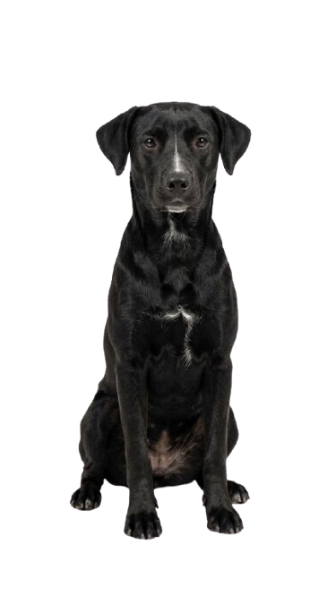
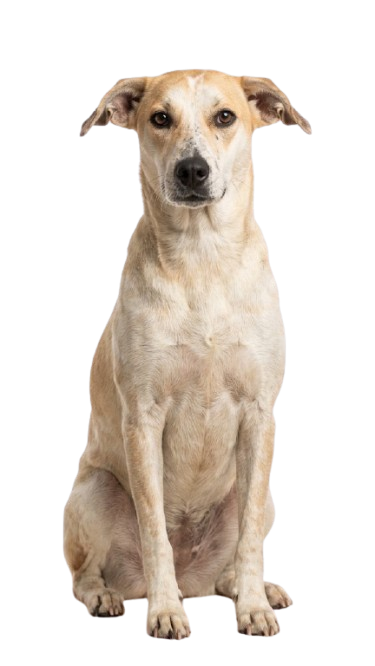

Chelito fue rescatado de las calles, ya que en su vida como perro callejero sufrió abuso de parte de otros perros, los cuales lo dejaron muy malherido hasta tal punto que en su carita hubo una infestación de gusanos y es por esa razón que su orejita derecha esta un poquito más caída que la izquierda.
Volver con la camadafue encontrado y rescatado, ya que su dueño anterior lo mutilaba, es decir, le cortaba pedazos de piel sin razón alguna, pero ahora ya es un perrito alegre y jugueto aunque que con una lesión en su patita trasera.
Volver con la camadaElla era una perrita que fue considerada una maquina de hacer cachorritos, pero cuando ella ya no pudo seguir haciendo bebes fue abandonada ya que sus dueños ya no la miraban como algo de valor.
Volver con la camadaEs una de las 2 hermanitas del refugio. Ellas fueron encontradas en una alcantarilla recien nacidas junto a su madre, posteriormente fueron transportadas al refugio juntas, pero su madre se fue a otro refugio.
Volver con la camadaLas gringas son inseparables gracias a su gran vinculo, por lo que a la hora de adoptarlas es necesario que se las lleven a las dos.
Volver con la camadafue abandonada y posteriormente rescatada, ya que sufre de incontinecia urinaria, esto es debido a que ella pario a muchos perritos y eso le genero ese efecto incontrolable de orinar a cada momento.
Volver con la camadafue rescatada de la calle y posteriormente salvada del moquillo aunque lastimosamente quedo con secuelas neuronales que le afectan su estabilidad y muchas otras funciones motora.
Volver con la camadaElla fue rescatada, ya que fue atropellada y se le quebró la patita derecha, fue llevada a la veterinaria y la operaron y pusieron un tornillo en su patita, pero lastimosamente no sano correctamente, ya que ella no se mantenía quieta, por ende es cojita.
Volver con la camadaGrecia da vida a momentos cálidos y hogareños. Le fascina recibir caricias en la cabeza y dormir siestas bajo el sol suave de la mañana.
Volver con la camadaSarami, ella fue rescatada de la calle, ya que fue encontrada en un fuerte estado de desnutrición con hongos y erliquia la cual es causada por las garrapatas.
Volver con la camada